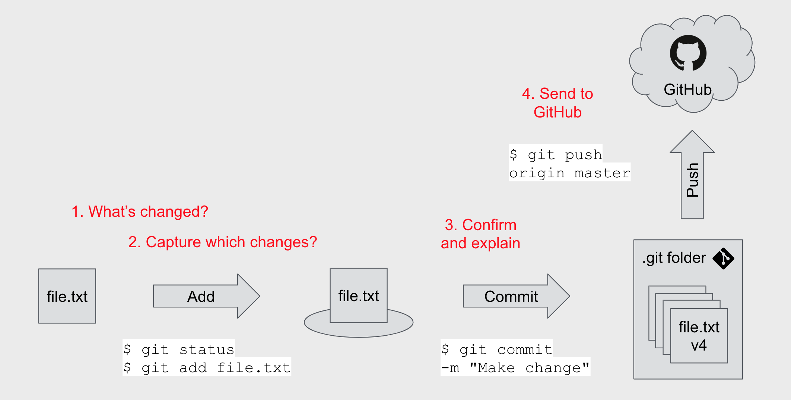

$ git --versiontl;dr
Git is software on your computer that acts as a brain to store the version history of your files. Forget the discombobulation of file names like weasel-facts_FINAL.txt, weasel-facts_FINAL_comments.txt, etc, etc. GitHub is a website and cloud service for storing your version history remotely and for making collaboration easier.
Summary
This post is a basic and non-comprehensive introduction to Git and GitHub, with a focus on Mac users who are starting a project and working alone. You may want to read my preparatory post on basic use of the command line to interact with your computer.
The image below provides an overview of the relationship between Git and GitHub:
- you have
file.txtunder version control with Git on your computer (it’s ‘local’) - Git stores all the versions in a special hidden
.git/folder - you can send (‘push’) this version history to a folder (‘repository’) on GitHub, a cloud-based version-history-storage and exploration service
- GitHub is not on your machine, it’s out in the world (it’s ‘remote’)
- you can easily share the files with the rest of the world and work collaboratively from there
The next diagram summarises a basic Git/GitHub workflow, which breaks into the following steps:
- Use
git statusto check what’s changed - Use
git addto stage a file - Use
git committo confirm the change and write an explanatory message - Use
git pushto send the new version information to GitHub

Also here’s a quick reference for some of the commonly-used Git commands used in this post:
| Command | Short explanation |
|---|---|
git init |
Put a folder under version control with Git |
git status |
Show which files are new or changed |
git add <file> |
Confirm the changes to be committed |
git commit -m "<message>" |
Commit the changes with an explanation |
git push |
Send your commits to GitHub |
git clone |
Copy the repo from GitHub to your computer |
Version control
It’s good to store intermediate versions of your files. The process of ‘version controlling’ means you can revert to prior states and prevents the confusion of having folders filled with things like file_FINAL.txt, file_comments2.txt and file_comments_FINAL.txt. Version control can be achieved in a number of ways, but one popular approach is to use Git software and the GitHub website.
Tools
Git is an open-source version control system that tracks file changes on your computer, records why they were made and lets you revert to a past state if something goes wrong. Alternatives include Mercurial and Apache Subversion.
GitHub is a Microsoft-owned website where you can store the Git history of your files remotely on the web. It acts as a place to inspect your version history in the browser; lets other people see your code in the open, use it themselves and collaborate with you; lets you record issues and to-do items; and much, much more. Alternative products include GitLab and BitBucket.
This post
The goal of this post is to put a new project folder under version control with Git and then upload the version history to GitHub. I assume you’re a beginner and are, for now, working alone on a project.1
We’ll be using the bash language at the command line to do all of this. In this post, lines should be typed into the command line when the example starts with a $ (you don’t need to type the dollar symbol yourself).
The command line is the place where you write instructions directly to your computer and you can access it via software like ‘Terminal’ on a Mac. You may want to see my earlier post for how to get basic stuff done at the command line before you continue.
It’s okay if you aren’t comfortable the command line. The bottom line is to get your work under some form of version control. You could always use GitHub’s drag and drop interface without needing to use the command line at all. There are guides available for using GitHub without using the command line.
Step-by-step
Let’s break down the steps required to:
- Set up Git and GitHub (do this once)
- Put a project folder under version control with Git (once per project)
- Save a version of your work and record it on GitHub (rinse and repeat during your project’s development)
I’ve written a section for each of these things. Click a link to jump to that section.
1. One-time tasks
You need to install Git on each computer you’ll be working from (feasibly only one computer), but only need to sign up once for GitHub.
Install Git
Git is basically a bunch of functions you can use via the command line, with each command preceded with the word git.
You can check to see if Git is installed on your machine by asking for its version number from the command line:
git version 2.20.1 (Apple Git-117)This response shows that I already have Git installed. If the git command isn’t recognised then you will need to download Git and install it.
Once installed, Git needs to know who you are so that file changes can be ascribed to you. Introduce yourself by supplying your name and email address:
$ git config --global user.name 'Your Name'
$ git config --global user.email 'youremail@address.com'These details are written to a special configuration file. You can print its contents to check it’s worked:
$ git config --global --listuser.name=Your Name
user.email=youremail@address.comCreate a GitHub account
GitHub is free to use but you need an account. Go to the GitHub website and click ‘Sign-up for GitHub’. You’ll need to provide a username, email address and password.
When prompted for a subscription level, choose ‘free subscription’. You’ll be able to do everything you need to do with this type of account; a premium account is more suitable for teams.
You’ll be sent an automated email to verify your email address. Click the button in the email to confirm, then check that your GitHub profile page is viewable at github.com/yourusername.
2. Project set-up
The following subsections are about creating a project folder and putting it under version control by activating Git.
Create your project folder
It’s good practice for each project to exist in its own repository (folder), so all the code, data, tests and documentation are in the same place. Let’s create a project folder now.
Using the command line, navigate with cd to where we want the folder to be, create it with mkdir and then navigate into it:
$ cd ~/Documents
$ mkdir demo-project
$ cd demo-project
$ pwd/Users/matt/Documents/demo-projectYou could also create a new folder by pointing and clicking; just make sure you navigate to the folder at the command line with cd.
Initiate Git
So we have our empty project folder, but it’s not yet under version control. How can we make Git aware of this folder and start tracking changes? We can initiate Git there:
$ git initInitialized empty Git repository in /Users/matt/Documents/demo-project/.gitWhat did this do? If you look inside the folder through your file explorer you’ll see nothing new. But look what happens when you ask at the command line to list (ls) all (the -A flag) the files and folders (marked by a / with the -p flag):
$ ls -A -p.git/So the project folder actually contains a folder called .git. This is where the version information will be stored, among other things. Why can’t you see it from your file explorer? Because it starts with a period, which marks it as a hidden file not to be shown unless specifically asked for.
Note that we haven’t yet recorded any versions; we’ve just added the relevant file structure for Git to operate in our project repository.
Create a .gitignore file
There are files that you may not want to put under version control. This might include sensitive files, large data sets or language-specific artefacts.
You can list such files in a special .gitignore file that tells Git not to worry about recording changes. Note that this file starts with a period, so it’s a hidden file like the .git file in the last section.
To create a gitignore file, navigate to your project file and use touch to create it and then open it with your computer’s default text editor (you can also edit it from the command line itself).
$ touch .gitignore
$ open .gitignoreNow to add things to the gitignore file. You could start by copying from a template, like the one for R. As an example, the first file in that template is .Rhistory – a log of all the commands you’ve typed – which you probably don’t need to track.
You could add things to your gitignore like sensitive-data.csv to ignore a specific data set, or something like *.csv (meaning any file name that ends with .csv) to ignore all files of a particular type. Mac users will also want to add .DS_Store, which is a kind of Mac-specific metadata file.
Create a remote GitHub repository
Everything we’ve done so far is on your machine; it’s all ‘local’. All the files we add and change will be local until we choose to send a copy of the information to GitHub.
Now we’re going to create a repository (folder) for the local information to be stored on GitHub. This location is ‘remote’. We’re doing this now as part of the project set-up steps, but you needn’t necessarily do it until later when you finally want to upload your version control history to GitHub.
To begin, make sure you’re logged into GitHub and click the ‘plus’ symbol in the upper right corner and then ‘New repository’. You can then input a repository name (i.e. the name of the project folder you created) and a short description.

You can choose to keep the project private, but far better for it to be public. You can also start this remote repository with a ‘readme’ file, ‘gitignore’ and a license if you want, but in this example we’re going to do these steps locally on our own machine.
Click the green ‘create repository’ button to continue, which looks like this:
This sets-up the remote repository on GitHub, but it’s empty right now. We haven’t sent any information yet. This will be the final step of the next section.
For now, let’s associate our local repository with the remote repository:
git remote add origin https://github.com/matt-dray/demo-project.gitRemember to change the file path to match your the URL to your project.
3. A Git/GitHub workflow
So far nothing has been put under version control; we’ve just been doing some set-up steps. Now we’ll create a file structure and start using Git and GitHub.
Work on your files
Start adding project files to your folder. Let’s say you’ve added a data set in raw-data/data.csv; an analysis.R script to analyse it; and a very important README.md file to to explain what your project is about.
Let’s say the CSV file contains these data:
number,position,name,nationality
1,"GK","Nicky Weaver","England"
9,"FW","Paul Dickov","Scotland"
10,"FW","Shaun Goater","Bermuda"
22,"DF","Richard Dunne","Ireland"
29,"MF","Shaun Wright-Phillips","England"And the R script looks like this:
mancity <- read.csv("raw-data/data.csv") # read data
mancity[mancity$position == "FW", ] # filter for forwardsAnd the readme file, written here using Markdown, says:
# demo-project
This is a demonstration of how to use Git and GitHub. It accompanies a blog post on [rostrum.blog](https://rostrum.blog).So the file tree ends up looking like this:
demo-project/
├── analysis.R
├── .git
├── .gitignore
├── raw-data/
│ └── data.csv
└── README.mdGreat, now let’s capture this version with Git.
Check file status
Run git status to see the files that have been created or modified.
$ git statusOn branch master
No commits yet
Untracked files:
(use "git add <file>..." to include in what will be committed)
.gitignore
README.md
analysis.R
raw-data/
nothing added to commit but untracked files present (use "git add" to track)All our new files and folders are listed under ‘Untracked files’. By ‘untracked’ Git is telling us that these are new files that haven aren’t yet under version control. All the files will be new the first time you run this process, of course.
Note that any files that are in your .gitignore will not appear here, since they’ve been ignored.
Helpfully, the output of git status also tells us what we need to do next: we need to use git add.
Add changes
Now you need to earmark the files whose changes you want to record. This process is called staging. The stage is a safe place where you can add files to be captured; they’re not yet confirmed. This is a preventative measure so you don’t accidentally record anything you didn’t mean to.
As mentioned in the output of git status, we can type git add <file> to do this. We have three files to add, so we can name them all:
$ git add .gitignore README.md analysis.R raw-data/You could also use git add ., where the period means ‘all the files’. Be careful if you use this – you don’t want to end up capturing things you didn’t mean to.
You won’t get any output, so how do we know this worked? Check the status again.
$ git statusOn branch master
No commits yet
Changes to be committed:
(use "git rm --cached <file>..." to unstage)
new file: .gitignore
new file: README.md
new file: analysis.R
new file: raw-data/data.csvThese files are now staged and marked as ‘changes to be committed’.
If you made a mistake at this point and want to remove files from the stage, you can type git rm --cached <file>. This line is helpfully printed in the output from git status.
Commit changes
When you’re happy with the files that have been staged, you can now commit them. This confirms that you want Git to record the changes made to these files.
You commit the staged changes using git commit. It’s good practice to leave a message explaining what changes were made and why. You can leave a simple message using the -m flag of git commit2. The message should be short (typically less than 50 characters) but informative (not just ‘changed stuff’). It’s convention to start with a verb, like ‘add this thing’ or ‘fix that thing’.
$ git commit -m "Add readme, gitignore, script and data"[master (root-commit) 133733b] Add readme, gitignore, script and data
4 files changed, 50 insertions(+)
create mode 100644 .gitignore
create mode 100644 README.md
create mode 100644 analysis.R
create mode 100644 raw-data/data.csvThe output confirms the files that have been added. It also tells us how many insertions (characters added) and deletions (characters removed) there were. The create mode lines reference that a file has started to be tracked.
How often should you make commits? It’s up to you, but it’s probably a good idea to do it when you’ve completed a section of code that does something useful and that you might want to revert to if there’s a problem later.
Just to prove that we’re up to date, we can check the status of the repository once more.
$ git statusOn branch master
nothing to commit, working tree cleanCool. Everything’s up to date.
Add and edit files (repeat as necessary)
Continue to create and edit files, adding and committing them when necessary. For example, let’s add a row to the data set:
22,"FWD","George Weah","Liberia"And add this line to the bottom of our README file:
The data are a selection of [Manchester City Football Club players from the 2000 to 2001 Premier League season](https://en.wikipedia.org/wiki/2000%E2%80%9301_Manchester_City_F.C._season).Given that we’ve changed our files and want to store this in our Git version history, let’s go through the status-add-commit workflow again. First, let’s check the status of the files:
$ git statusOn branch master
Changes not staged for commit:
(use "git add <file>..." to update what will be committed)
(use "git checkout -- <file>..." to discard changes in working directory)
modified: README.md
modified: raw-data/data.csv
no changes added to commit (use "git add" and/or "git commit -a")So the altered files are now marked as ‘modified’. Let’s add them both; I’ll use the period shortcut to add both without typing their full names:
$ git add .One more look at the status to check it’s done what we wanted:
$ git statusOn branch master
Changes to be committed:
(use "git reset HEAD <file>..." to unstage)
modified: README.md
modified: raw-data/data.csvAnd now to commit with a message:
git commit -m "Add King George to the data, update readme with Wikipedia link"[master 1359d3f] Add King George to the data, update readme with Wikipedia link
2 files changed, 3 insertions(+)And lets check we’re up to date:
$ git statusOn branch master
nothing to commit, working tree cleanBoom. We’re up to date.
You can rinse and repeat this edit-status-add-commit to store versions of the files in your repository.
Push changes to GitHub
Great, you’ve used Git to version control your files. But the commits are stored locally on your machine. How do you send them to GitHub so you have a remote copy of your version history?
Remember when we set up the GitHub repository for this project earlier on? Now we’re ready to send the version history from our local project folder to this remote repository.
You do this by ‘pushing’ the local information to GitHub.
git push -u origin masterCounting objects: 12, done.
Delta compression using up to 8 threads.
Compressing objects: 100% (10/10), done.
Writing objects: 100% (12/12), 1.52 KiB | 388.00 KiB/s, done.
Total 12 (delta 3), reused 0 (delta 0)
remote: Resolving deltas: 100% (3/3), done.
To https://github.com/matt-dray/demo-project.git
* [new branch] master -> master
Branch 'master' set up to track remote branch 'master' from 'origin'.The output confirms that the push was successful.
If you go now to your repository on GitHub, you’ll see that your files have been added. For example, I would navigate to https://github.com/matt-dray/demo-project (this is a real link to the project used in this post!).
You can see the files at the top and our README.md has helpfully been rendered by GitHub so that people can see what the repository is all about.
There’s lots of stuff you can do from here. For example, click ‘Commits’ above and to the left of the list of your files. You can see each of the commits we made earlier.
You can do things like explore the repository at any given commit (click the <> button) or if you click the alphanumeric code (a unique code given to each commit) you can see the changes that were made with that commit. In this split view, the left panel is the state of each file before the commit, with changes on the right. Additions are green and start with a +; deletions are red with a — symbol.

So now you the version history is available remotely and you can easily navigate the changes and explore the various snapshots of your work.
Now you can continue to work locally on your files and push the changes to GitHub when you’re ready.
Clone the repo to your machine
Let’s say you’re on a different machine or a collaborator wants a copy of the GitHub repo. How do you get the files from GitHub onto the new machine?
You can ‘clone’ the repo.
To do this, we need to tell Git where to clone from. One method is via HTTPS using the repo’s URL:
- Navigate to the repo
- Click the ‘clone or download’ button and copy the path
- Use
cdon the command line to navigate to where you want to clone the repo - Run
git clone <path>
You’ll see something like this when you run git clone from the command line:
git clone https://github.com/matt-dray/demo-project.gitCloning into 'demo-project'...
remote: Enumerating objects: 15, done.
remote: Counting objects: 100% (15/15), done.
remote: Compressing objects: 100% (10/10), done.
remote: Total 15 (delta 5), reused 10 (delta 3), pack-reused 0
Unpacking objects: 100% (15/15), done.The output shows the progress of the download. Congratulations, the repo has been copied from GitHub to your machine!
What next?
This post has been for beginners to get to grips with the fundamental Git commands init, status, add, commit, push and clone.
Git is extremely powerful and does so much more that wasn’t covered here.
A sensible next step would be to learn more about ‘branching’ in particular. This involves working on an isolated copy of the repo so you can work safely on new features without fear of ruining the main, or ‘master’ branch of work. If your development is successful, you can merge it back into the ‘master’ branch with a ‘pull request’.
You will also want to think about working collaboratively on a project. GitHub has lots of facilities for encouraging team work, like issue tracking and the ability to comment on changes. If you’re working on a new feature in a branch you can request a review from your colleagues to merge your work into the main ‘master’ branch; this is called a ‘pull request’.
I recommend checking out some of the great materials that are alreay out there. See the next section for some starters.
Other resources
The concepts in this blog post and more are explained well and in more depth in other blog posts, articles and books.
Version control
- Excuse me, do you have a moment to talk about version control? – a freely-available and very readable introduction in the PeerJ journal by Jenny Bryan
Git-specific
- Git for humans slides by Alice Bartlett
- Version Control with Git is a beginners’ course by Software Carpentry – you can sign up to have it delivered in a session, or follow at home
- There are introductory Git videos on the Git website
- Pro Git is a free online book by Scott Chacon and Ben Straub – don’t be alarmed by the title; it starts from first principles
- GitHub has a suite of reading and training materials for Git
- Learn Git Branching, an interactive visual walkthrough by Peter Cottle
GitHub-specifc
- GitHub Learning Lab for learning GitHub from within GitHub
- Using GitHub without the command line by Craig Lockwood is a way of having the power of GitHub and version control without needing to use Git
R-specific
- Happy Git and GitHub for the useR, a book about interacting with Git and GitHub in R workflows by Jenny Bryan, the teaching assistants of STAT545 and Jim Hester
- Version Control with Git and SVN, a walkthrough for using Git in RStudio’s IDE by Nathan Stephens
Environment
Session info
Last rendered: 2023-07-24 21:02:24 BSTR version 4.3.1 (2023-06-16)
Platform: aarch64-apple-darwin20 (64-bit)
Running under: macOS Ventura 13.2.1
Matrix products: default
BLAS: /Library/Frameworks/R.framework/Versions/4.3-arm64/Resources/lib/libRblas.0.dylib
LAPACK: /Library/Frameworks/R.framework/Versions/4.3-arm64/Resources/lib/libRlapack.dylib; LAPACK version 3.11.0
locale:
[1] en_US.UTF-8/en_US.UTF-8/en_US.UTF-8/C/en_US.UTF-8/en_US.UTF-8
time zone: Europe/London
tzcode source: internal
attached base packages:
[1] stats graphics grDevices utils datasets methods base
loaded via a namespace (and not attached):
[1] htmlwidgets_1.6.2 compiler_4.3.1 fastmap_1.1.1 cli_3.6.1
[5] tools_4.3.1 htmltools_0.5.5 rstudioapi_0.15.0 yaml_2.3.7
[9] rmarkdown_2.23 knitr_1.43.1 jsonlite_1.8.7 xfun_0.39
[13] digest_0.6.33 rlang_1.1.1 fontawesome_0.5.1 evaluate_0.21 Reuse
CC BY-NC-SA 4.0